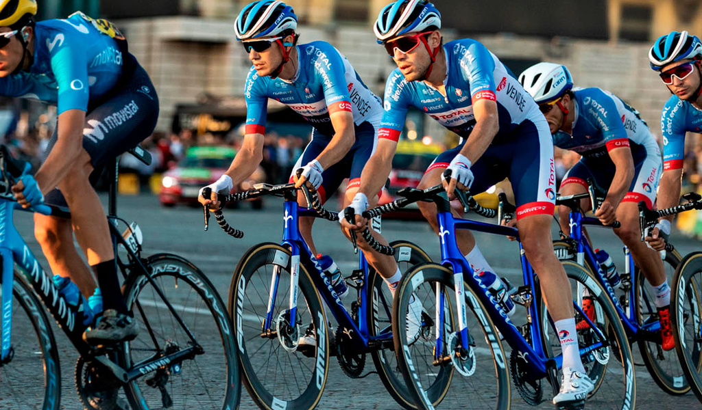

Date : 12/05/2021 Environnement
Chez Total, nous avons décidé de vous associer à la co-création des stations-services nouvelles générations et des boutiques Total plus responsables et vertueuses.
Avec la transition écologique et notre objectif zéro carbone, nos boutiques et stations-services doivent se réinventer pour le bien-être de la planète tout en améliorant votre expérience client.

Date : 12/05/2021 Gouvernance
Le fournisseur alternatif Total Direct Energie a changé de nom le 28 mai dernier et s’appelle désormais TotalEnergies. Ce changement de nom s’inscrit dans la volonté de l’entreprise de miser plus que jamais sur la transition énergétique. En devenant TotalEnergies, l’entreprise souhaite se détacher de son identité liée aux énergies fossiles, et plus particulièrement.

Date : 12/05/2021 Sport
Team Total Direct Energie a clos son recrutement pour la saison 2021. L’effectif sera composé de 27 hommes. Après une saison 2020 décevante, Total Direct Energie aura à cœur de retrouver des couleurs en 2021. Pour cela, l’équipe vendéenne a recruté plusieurs grimpeurs, dont Pierre Latour, meilleur jeune du Tour de France 2018. Le Drômois partagera le statut de leader avec le sprinteur italien Niccolò Bonifazio et Anthony Turgis.
Date : 12/05/2021 Environnement
L’espèce humaine est confrontée à l’un des plus grands défis qu’elle ait jamais rencontré : le changement climatique. TotalEnergies met également de nombreuses stratégies en œuvre pour améliorer l’efficacité énergétique des bâtiments en France, notamment à travers des programmes d’aides financières.
Date : 12/05/2021 Partenariat
Basée à Lisieux (Calvados), l’agence de communication Apostrophe et Cie ajoute une corde à son arc en s’associant à TotalEnergie pour la refonte et l'amélioration d'expérience utilisateur du site en externe, de manière permanente : faisant d'Apostrophe une infrastructure quasiment intégrante du groupe. On leur souhaite donc la bienvenue dans nos équipes et...